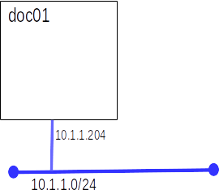

Lab: Intro To Docker
Introduction
Hopefully the reading assignment has peaked your curiosity about Docker. Now's your chance to get a bit of an understanding of how Docker works. This introduction should give you the basic skills you need to start designing and building Docker environments to satisfy the requirements of the projects to follow. It will not cover everything you need to know, there will be more research and experimentation required.
Today you will:
- Use Docker on Debian
- Run some pre-built images
- Build your own image
- Publish your image to the public Docker repository
Upon completion you should:
- Know the difference between and image and a container
- Know how to run containers
- Know how to publish containers
- Have some questions like:
- How do I manage network connections?
- How do I manage persistent storage?
- What would be some good scenarios in which to use Docker?
- How do I mange user accounts within a container?
Part A: Build a Docker host
We are going to use Docker on Debian.

- Import the VM from the bookworm_min.ova appliance.
- Set the hostname and IP address
- Install docker
apt update
apt install docker.io docker-compose
- Check our work
docker run hello-world
Part B: Getting Started
Today we will complete the first four sections of Docker's excellent Get Started guide. We will complete the guide for our next lab.
- Complete the first 4 sections of this guide: Get Started Guide from Docker
- Once you have completed Step 4 Share the application move on to Part C of this lab
-
Note: When mapping ports ports at run time with -p, listen on all interfaces not just loop-back. Use:
-p 3000:3000
in place of the tutorial's:
-p 127.0.0.1:3000:3000
Part C: Apply your knowledge
Now that you know the basics of Docker and containers, it is time to apply what you have learned. You will build and publish a static web site container with custom content.
- Use this image as a base: Docker httpd image
- Write a Dockerfile to reference the base image, copy in your content, and declare what ports should be exposed. This will be a short file
- Your site must contain:
- A default home page, stating your name and student number
- Your home page must have at least one link to an other page hosted by your container
- Publish(push) your image to the public docker registry
- you will need to create an account
- name your image YOUR_USERNAME/lab1_apache
- make sure the image is public
- have a classmate, try pulling and running your image and/or use the on-line Docker sandbox.
Part D: Grading
- Submit your Dockerfile to the dropbox for this lab. Place the name of your image, in the comments section, so your instructor can pull it.
Clean up
-
You will need a working doc01 for future labs.